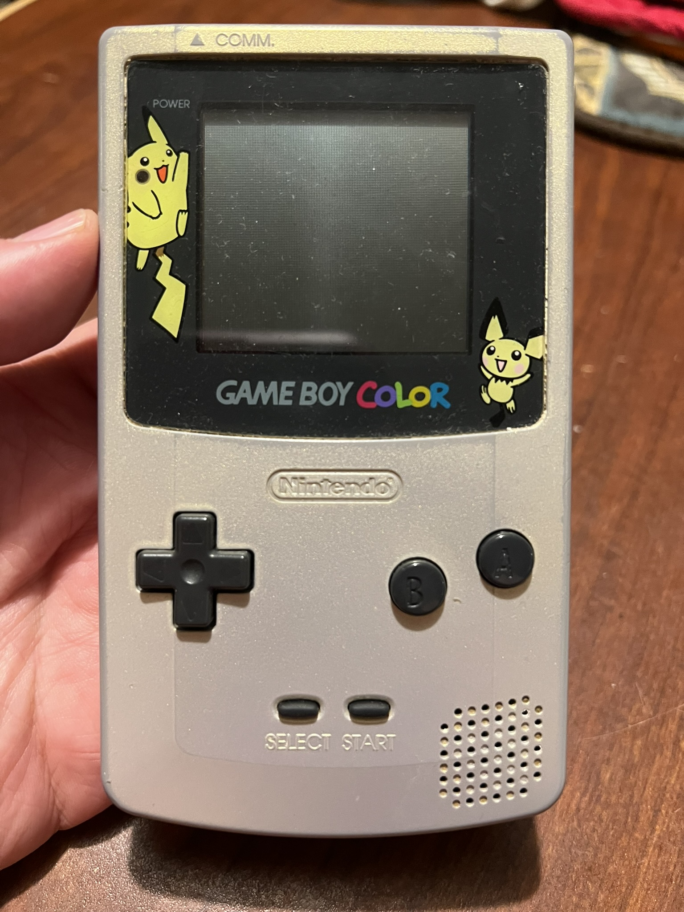
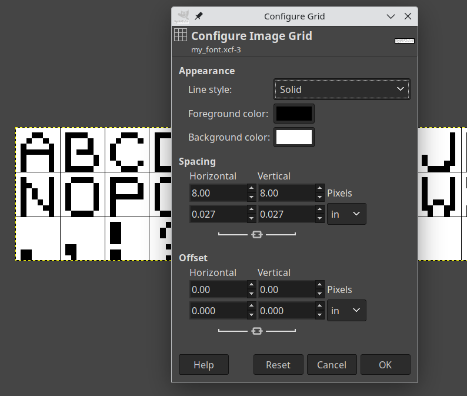
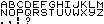
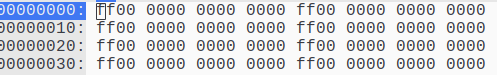
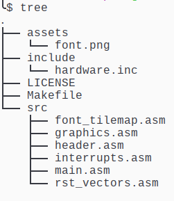

Making a "Hello World" Gameboy ROM
Table of Contents
Getting Started
The Nintendo Gameboy is probably my favorite handheld gaming console. I've had A Gameboy Color since I was a child, and it still sits on my entertainment center today. I decided that I wanted to write a program to run on the device, so I started figuring out how to go about that. Here's a quick-and-dirty guide to getting started programming for the Gameboy.

Fortunately, it's pretty easy to get set up and developing for the Gameboy thanks to the RGBDS toolchain. Their documentation, especially the PanDocs are essential reading if you want to learn about the Gameboy. In this post, I'll be going through the process of writing a "Hello World" program and running it on a Gameboy emulator (or real hardware if you have a flash cart or something).
For this post, I'll only be talking about the Original (DMG/MGB) Gameboy. The Gameboy Color is compatible with Gameboy games, just with beefier hardware and of course a color display. There are some hardware quirks that are different between the models, but nothing that will affect anything we're doing.
We'll start with creating the font and the background tilemap that will display our image. After those are created, we can get to the actual code and use them.
All of the code for this project can be found Here on Github.
You should get an emulator with a decent debugger and high accuracy. I use the BGB emulator, which is a Windows only application, but it's also tested on Wine. If you're looking for a good open-source emulator with a debugger, Sameboy is a good choice.
The Gameboy Screen
The Gameboy displays graphics as 8 pixel x 8 pixel tiles. These tiles are loaded into VRAM and are then referenced from tilemaps. The background references one of two tilemaps, and is where most of what will be displayed on the screen is written, including text in most games (that I've looked at, anyway). There's a bit more to it, but we're only going to be using a single tilemap and only the background for now.
The display area is 160 pixels wide and 144 pixels tall, or 20 tiles x 18 tiles. The background's tilemap is actually 32 tiles x 32 tiles, so we only see a portion of it at a time. We're not going to worry about the tiles outside of the default display area for this program.
Creating a Font
In order to write anything, we need a font. The Gameboy doesn't supply anything, nor does RGBDS come with any assets. So we'll just create one with an image editing program, in my case GIMP. In GIMP, I found it helpful to use the grid overlay to create 8x8 pixel squares, and then using the 1 pixel brush, draw the characters.

Each character needs to fit within the 8x8 square, as that will be a single tile in the resulting graphics data. If we save the image as a png, we can use rgbgfx to convert the image into a format the Gameboy can use, and that can be imported directly into our code.

Once we have our font.png saved, we can convert it like so:
rgbgfx -u -o font.2bpp font.png
The .2bpp stands for "2 bits per pixel", which is the default output mode for rgbgfx, and will give us all 4 colors
of the Gameboy. The -u option will generate unique tiles, so all of the blank area we have will only yield a single
blank tile in the output. We do need at least one blank tile, since every space that isn't going to be a letter will
need to use the blank space. We have our font tileset, and now we're ready to start using it.
Creating a Tilemap
I'm going to be using $XX notation for hexadecimal, because that's how you're going to be seeing it in the assembly.
So we have a font, but we still have to actually write on something with it. For this, we're going to use a tilemap that will be applied to the background. The tilemap is a sequence of tile indices, starting from the top row. For this font, we can easily figure out the indices without having to actually look at anything, since we know it will start at the top left of the image, and move across, row by row. This means it will start with 'A' at index 0, and go on from there through the rest of the alphabet. Given the font, the indices are as follows:
| index (hex) | character |
|---|---|
| 0-25 ($00-$19) | A-Z |
| 26 ($1A) | . |
| 27 ($1B) | , |
| 28 ($1C) | ! |
| 29 ($1D) | ? |
| 30 ($1E) | <space> |
We could have also loaded the data into a ROM and loaded that into an emulator with a VRAM viewer like BGB to look at the tile data. Assuming you have a functioning ROM, which we don't yet.
We define the tilemap with a bit of assembly.
SECTION "tilemap_data", ROM0
tilemap::
db $1E, $1E, $1E, $1E, $1E, $1E, $1E, $1E, $1E, $1E, $1E, $1E, $1E, $1E, $1E, $1E, $1E, $1E, $1E, $1E, 0,0,0,0,0,0,0,0,0,0,0,0
db $1E, $1E, $1E, $1E, $1E, $1E, $1E, $1E, $1E, $1E, $1E, $1E, $1E, $1E, $1E, $1E, $1E, $1E, $1E, $1E, 0,0,0,0,0,0,0,0,0,0,0,0
db $1E, $1E, $1E, $1E, $1E, $1E, $1E, $1E, $1E, $1E, $1E, $1E, $1E, $1E, $1E, $1E, $1E, $1E, $1E, $1E, 0,0,0,0,0,0,0,0,0,0,0,0
db $1E, $1E, $1E, $1E, $1E, $1E, $1E, $1E, $1E, $1E, $1E, $1E, $1E, $1E, $1E, $1E, $1E, $1E, $1E, $1E, 0,0,0,0,0,0,0,0,0,0,0,0
db $1E, $1E, $1E, $1E, $1E, $1E, $1E, $1E, $1E, $1E, $1E, $1E, $1E, $1E, $1E, $1E, $1E, $1E, $1E, $1E, 0,0,0,0,0,0,0,0,0,0,0,0
db $1E, $1E, $1E, $1E, $1E, $1E, $1E, $1E, $1E, $1E, $1E, $1E, $1E, $1E, $1E, $1E, $1E, $1E, $1E, $1E, 0,0,0,0,0,0,0,0,0,0,0,0
db $1E, $1E, $1E, $1E, $1E, $1E, $1E, $1E, $1E, $1E, $1E, $1E, $1E, $1E, $1E, $1E, $1E, $1E, $1E, $1E, 0,0,0,0,0,0,0,0,0,0,0,0
db $1E, $1E, $1E, $1E, $1E, $1E, $1E, $1E, $1E, $1E, $1E, $1E, $1E, $1E, $1E, $1E, $1E, $1E, $1E, $1E, 0,0,0,0,0,0,0,0,0,0,0,0
db $1E, $1E, $1E, $07, $04, $0B, $0B, $0E, $1B, $1E, $16, $0E, $11, $0B, $03, $1C, $1E, $1E, $1E, $1E, 0,0,0,0,0,0,0,0,0,0,0,0
db $1E, $1E, $1E, $1E, $1E, $1E, $1E, $1E, $1E, $1E, $1E, $1E, $1E, $1E, $1E, $1E, $1E, $1E, $1E, $1E, 0,0,0,0,0,0,0,0,0,0,0,0
db $1E, $1E, $1E, $1E, $1E, $1E, $1E, $1E, $1E, $1E, $1E, $1E, $1E, $1E, $1E, $1E, $1E, $1E, $1E, $1E, 0,0,0,0,0,0,0,0,0,0,0,0
db $1E, $1E, $1E, $1E, $1E, $1E, $1E, $1E, $1E, $1E, $1E, $1E, $1E, $1E, $1E, $1E, $1E, $1E, $1E, $1E, 0,0,0,0,0,0,0,0,0,0,0,0
db $1E, $1E, $1E, $1E, $1E, $1E, $1E, $1E, $1E, $1E, $1E, $1E, $1E, $1E, $1E, $1E, $1E, $1E, $1E, $1E, 0,0,0,0,0,0,0,0,0,0,0,0
db $1E, $1E, $1E, $1E, $1E, $1E, $1E, $1E, $1E, $1E, $1E, $1E, $1E, $1E, $1E, $1E, $1E, $1E, $1E, $1E, 0,0,0,0,0,0,0,0,0,0,0,0
db $1E, $1E, $1E, $1E, $1E, $1E, $1E, $1E, $1E, $1E, $1E, $1E, $1E, $1E, $1E, $1E, $1E, $1E, $1E, $1E, 0,0,0,0,0,0,0,0,0,0,0,0
db $1E, $1E, $1E, $1E, $1E, $1E, $1E, $1E, $1E, $1E, $1E, $1E, $1E, $1E, $1E, $1E, $1E, $1E, $1E, $1E, 0,0,0,0,0,0,0,0,0,0,0,0
db $1E, $1E, $1E, $1E, $1E, $1E, $1E, $1E, $1E, $1E, $1E, $1E, $1E, $1E, $1E, $1E, $1E, $1E, $1E, $1E, 0,0,0,0,0,0,0,0,0,0,0,0
db $1E, $1E, $1E, $1E, $1E, $1E, $1E, $1E, $1E, $1E, $1E, $1E, $1E, $1E, $1E, $1E, $1E, $1E, $1E, $1E, 0,0,0,0,0,0,0,0,0,0,0,0
tilemap_end::
A quick explanation of what we're looking at here. We declare a SECTION we want to be located in ROM0, or
just somewhere in the ROM. We then define 2 labels, tilemap and tilemap_end. The double colon at the end means
to export the label so it can be referenced in other files.
We have 18 lines starting with db, one for each row of tiles on the screen. We're defining a list of bytes along with
the values that will be in them. These will be the indices for the tiles that appear on the screen. We only care about
the first 20 in each row, but the remaining 12 must still be set to something. We'll just set them to 0.
The whole screen is blank space except for one line in the middle that looks like this:
db $1E, $1E, $1E, $07, $04, $0B, $0B, $0E, $1B, $1E, $16, $0E, $11, $0B, $03, $1C, $1E, $1E, $1E, $1E, 0,0,0,0,0,0,0,0,0,0,0,0
These indices will give us the tiles to spell out "HELLO, WORLD" roughly centered on the screen. Save this file as "hello_tilemap.asm" and it's ready to be used by our other code. At this point, we have everything we need to display our message, now we just need to make the Gameboy actually display it.
Structure of a Gameboy ROM
A Gameboy ROM has a few locations that are defined for specific purposes, and at least the header must actually be correct to have a valid ROM. There's not too much to get them correct per specifications, so we'll go ahead and do that even if it's not strictly necessary. It'll make it easier to build upon when we do want to use them later, too.
RST Vectors
The first bit of a Gameboy rom looks like this:
| address | purpose |
|---|---|
| $00-$38 | RST vectors, 8 bytes each, no prescribed purposes |
| $40-$60 | Interrupt vectors, 8 bytes each (described below) |
The 8 RST vectors each have 8 bytes of space before the next one, and there are opcodes to call each one. RST $00,
RST $08, etc. You could put functions in here, if they fit, and many games seem to have these defined like this:

The first byte of each target is $ff, and the rest are $00. If you were to try to execute any of these, $ff is the
opcode for RST $38, so you would just push $0039 to the stack and jump to $0038 forever. If you've ever seen a Gameboy
game crash and display vertical lines over the screen, check out the contents of RAM in a debugger and there's a good
chance that it's filled with a repeating pattern of 39 00 from the stack overflowing.
We can go ahead and define ours the same way. If we end up hitting one of these, it's better to crash than nop slide into other valid code. It's much more difficult to debug this (ask me how I know).
In "rst_vectors.asm",
DEF NUM_RST_VECTORS EQU 8 SECTION "rst_vectors", ROM0[$0000] FOR n, NUM_RST_VECTORS rst_vector{d:n}:: rst $38 ds ALIGN[3] ENDR
I'm using a loop to define the RST vectors here, with the names being rst_vector0, rst_vector1, etc. For each one, we put in a RST $38 (opcode $ff), and then tell it to pad until the least 3 significant bits of the address are 0. This will get us to the end of the 8 byte section.
Interrupt Handlers
The interrupt vectors are similar to the RST vectors, but they are called whenever an interrupt occurs that we have enabled, and interrupts in general are enabled. They are as follows:
| address | purpose |
|---|---|
| $40 | Vblank interrupt |
| $48 | STAT interrupt |
| $50 | Timer interrupt |
| $58 | Serial interrupt |
| $60 | Joypad interrupt |
See here for a more detailed description of each interrupt. The one we're interested in here is the vblank interrupt, as this will fire off once per frame, just after the screen is done being drawn. This is important when we want to access VRAM or OAM (sprites and such). See here and here for explanations of what is accessible during the various states of the PPU.
For now, though, we'll just do nothing but return with interrupts enabled on a vblank.
To define the interrupt handlers, in "interrupts.asm",
SECTION "interrupt_handler",ROM0[$0040] vblank_interrupt:: reti ds ALIGN[3] stat_interrupt:: rst $38 ds ALIGN[3] timer_interrupt:: rst $38 ds ALIGN[3] serial_interrupt:: rst $38 ds ALIGN[3] joypad_interrupt:: rst $38 ds ALIGN[3]
The ROM Header
The ROM header is located at $0100 - $014f. The first 4 bytes are the only ones we're going to care about right now, and rgbfix will take care of the rest for us. See this page for an overview of the Gameboy boot process, and what the requirements for the header are.
Basically if the Nintendo logo and header checksum are good, the boot ROM will hand control over to our ROM at address $0100. Let's go ahead and create the "header.asm" file and define the header like this:
SECTION "Header", ROM0[$0100] jp entry_point ds $4d, 0
There's not much to it, because we're really mostly just allocating the space. The section directive here gives an explicit location for this code; it's to be located in ROM at address $0100. Next we jump to our real code, which will be defined elsewhere. Finally we allocate enough bytes to fill up the remaining space. We have $50 bytes of space to fill in total, and we've used 3 of them for the jump instruction, we just fill the remaining $4d bytes with 0. This will be filled in by rgbfix after we link our object code.
Getting our Message on the Screen
Now that we have the boilerplate bits for the ROM header done, we're ready to make the Gameboy display our message. We'll start with our entrypoint and main loop.
Reminder: Vblank is the period of time between frames being drawn. It's necessary to wait for this period to perform certain actions and access VRAM. Refer back to here for more info.
If you're running this on real hardware, make sure you disable the LCD/PPU ONLY during vblank. Disabling the LCD outside of vblank may cause physical damage to the screen.
INCLUDE "hardware.inc" SECTION "data", WRAM0 frame_counter:: db SECTION "main", ROM0 entry_point:: ;; First thing we need to do is wait for Vblank so we can disable the LCD/PPU ;; this will allow us access to the VRAM without interruption. We enable the ;; interrupt flag here. ld a, IEF_VBLANK ldh [rIE], a ;; and then enable interrupts here. You don't want to do a halt immediately following ;; ei due to a bug, so we zero out a since we needed to anyway ei xor a halt ;; turn off the LCD/PPU ld [rLCDC], a ;; turn off the sound system. Recommended to do if it's not being used ld [rNR52], a ld [frame_counter], a call load_graphics ;; load the palatte colors for the background ;; $E4 = 11 10 01 00 -- black, dark gray, light gray, white ld a, $E4 ld [rBGP], a ;; We've got the graphics loaded and everything ready to go, so let's turn the LCD ;; back on and run our main loop ld a, LCDCF_ON | LCDCF_BGON ld [rLCDC], a main_loop: halt ;; halt the cpu and wait for an interrupt to occur ld a, [frame_counter] inc a ld [frame_counter], a jp main_loop
I went ahead and implemented a frame counter as a label within a WRAM0 section. Since it's data that we need to change during execution, it needs to be in RAM. We can't define the value of it when we define it because of this, so we have to initialize it while we're zeroing other data.
The source is commented up so it shouldn't be too hard to follow. You'll want to grab a copy of "hardware.inc" from the RGBDS website. It's full of DEFs for various registers and flags, so you don't have to write them yourself or stick a bunch of magic numbers in your code.
Loading the Graphics
The call load_graphics line in the previous file is doing quite a bit of heavy lifting there, so let's take a look
at what it's actually doing.
SECTION "graphics_functions", ROM0 load_graphics:: ;; de = data source ;; hl = destination ;; bc = length ld de, bg_tile_data ld hl, $9000 ld bc, bg_tile_data_end - bg_tile_data call mem_copy ld de, tilemap ld hl, $9800 ld bc, tilemap_end - tilemap call mem_copy ret mem_copy:: ld a, [de] ld [hli], a inc de dec bc ld a, b or a, c jr nz, mem_copy ret SECTION "graphics_data", ROM0 bg_tile_data: INCBIN "assets/font.2bpp" bg_tile_data_end:
You'll see that there's a mem_copy helper function here. That's because we need to copy chunks of data from the ROM to the VRAM. The INCBIN directive below is pulling in the font data and giving it a start and end label. The end label is needed to do the math to determine the length of the data.
Unfortunately, hardware.inc doesn't have anything very handy for the VRAM blocks, so we'll just go ahead and put in the numbers here. In a larger project, you'll probably want to write the DEFs yourself. In the default settings, tile data is read starting from address $9000, and the tilemap is read from $9800.
Building the ROM
At this point, all of the coding is finished, and all that's left to do is put it all together into a proper ROM. There are 3 basic steps needed to get our code ready to run.
- Assemble the source
- Link the objects
- Create a valid header and pad the ROM for size
I use Make to automate these tasks, and I keep my sources organized as shown below:

Then I use make to build the ROM for me. Here's the Makefile for this project. One thing to note is that I don't have rgbds installed on my machine, I build it from source and keep multiple versions hanging around, one directory above where my projects live. You can either compile it yourself and match my directory structure, or if you install rgbds on your system, run make with one additional option to unset that variable and use what you have installed.
If you compile rgbds yourself and have it in rgbds-v0.8.0 one directory up from the Makefile:
make
or if you have rgbds installed and in your $PATH already:
make -e RGBDS_ROOT=
The Makefile that builds the ROM is below:
RGBDS_ROOT := ../rgbds-v0.8.0/ RGBASM := ${RGBDS_ROOT}rgbasm RGBLINK := ${RGBDS_ROOT}rgblink RGBFIX := ${RGBDS_ROOT}rgbfix RGBGFX := ${RGBDS_ROOT}rgbgfx SRC = $(wildcard src/*.asm) OBJ = $(patsubst src/%.asm,obj/%.o,$(SRC)) IMG_SRC = $(wildcard assets/*.png) IMG = $(patsubst assets/%.png,assets/%.2bpp,$(IMG_SRC)) SRCD := src OBJD := obj INCD := include IMGD := assets ROMS := hello_world.gb all: $(ROMS) %.gb: $(IMG) $(OBJ) $(RGBLINK) -m $(*F).map -n $(*F).sym -o $@ $(OBJ) $(RGBFIX) -v -p 0xFF $@ assets/%.2bpp: $(IMGD)/%.png $(RGBGFX) -u -o $@ $^ $(OBJD)/%.o: $(SRCD)/%.asm $(IMG) @mkdir -p $(OBJD) $(RGBASM) -o $@ $< -I $(INCD) .PHONY: clean clean: @rm $(OBJD)/*.o @rm $(IMGD)/*.2bpp @rm *.{gb,map,sym} @rmdir $(OBJD)
I try to keep my makefiles fairly flexible and easy to extend for new projects. Dropping new sources and png files in place will work without any further modifications. Running different commands, or using additional locations, will mean you'll need to add those targets to the Makefile.
This Makefile converts png files in assets/ to .2bpp files, assembles any asm file in src/, putting the object files in the obj/ directory. Then it links them to create the ROM, and rgbfix creates the header and pads the ROM to a valid cartridge size.
A couple of commands of note are the rgblink command, which generates a .map file and a .sym file with the -m and
-n options, respectively. These files should sit in the same directory as your ROM for BGB to pick them up for use
in the debugger.
The rgbfix command is also one that does a couple of jobs. First, the -v options validates and corrects the header.
This includes the Nintendo logo and the checksums. You can tell rgbfix to set other header options, but the defaults
are fine for this project. The -p 0xFF option tells it to pad the ROM size to a valid cartridge size, using $ff bytes
to pad with. Valid cartridge sizes are powers of 2 between 32KB and 8192KB, inclusive.
Running the ROM
The result is a proper ROM, so now we just load it into an emulator and…
We have a functioning ROM now. If you have a debugger open, you can check the sym or map file for the location of
the frame_counter label (which should be $c000, the beginning of WRAM) and watch it counting frames.
Now What?
Now that we have a functioning ROM, we have a reasonable base to start building on top of. I'll be using this ROM as a starting point for building new examples.